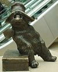

Contents
Featured content
Current events
Random article
Donate to Wikipedia
Wikipedia store
Interaction
Help
About Wikipedia
Community portal
Recent changes
Contact page
Tools
What links here
Related changes
Upload file
Special pages
Permanent link
Page information
Wikidata item
Print/export
Create a book
Download as PDF
Printable version
In other projects
Wikimedia Commons
MediaWiki
Meta-Wiki
Wikispecies
Wikibooks
Wikidata
Wikinews
Wikiquote
Wikisource
Wikiversity
Wikivoyage
Languages
Simple English
العربية
Bahasa Indonesia
Bahasa Melayu
Bosanski
Български
Català
Čeština
Dansk
Deutsch
Eesti
Ελληνικά
Español
Esperanto
Euskara
فارسی
Français
Galego
한국어
עברית
Hrvatski
Italiano
ქართული
Latviešu
Lietuvių
Magyar
Nederlands
日本語
Norsk bokmål
Norsk nynorsk
Polski
Português
Română
Русский
Slovenčina
Slovenščina
Српски / srpski
Srpskohrvatski / српскохрватски
Suomi
Svenska
ไทย
Tiếng Việt
Türkçe
Українська
中文
Complete list
The Earth-grazing meteoroid of 13 October 1990 entered the atmosphere above Czechoslovakia and Poland and, after 9.8 seconds, returned to space. Named EN131090, the 44-kilogram (97 lb) meteoroid was observed travelling 409 kilometres (254 mi) at a speed of 42 km/s (26 mi/s) by cameras of the European Fireball Network. Its apparent magnitude peaked at -6.3, several times brighter than Venus's peak magnitude. Observations of such events are quite rare; this was the second recorded by scientific astronomical instruments (after the 1972 Great Daylight Fireball) and the first recorded from two distant positions, which enabled the calculation of several of its orbital characteristics. The encounter with Earth significantly changed its orbit and, to a smaller extent, some of its physical properties, including its mass and the structure of its upper layer. If the meteoroid had reached the lower atmosphere, it would have overheated and exploded high above the ground, leaving at most a few small meteorites that posed no danger to the Earth's surface.
Did you know...
Edmund Kalau
... that after Edmund Kalau (pictured) spent his childhood in the Hitler Youth, he converted to Christianity and served in Palau and Yap in the Liebenzell Mission?
... that the philosophy journal Between the Species took its name from a fictional periodical mentioned in a George Abbe novel?
... that the science fiction video game Tharsis, inspired by the sinking of the whaling ship Essex, allows the crew of the player's spacecraft to use cannibalism to survive?
... that both the 5-8 Club and Matt's Bar, two Minneapolis eateries on the same street, claim to have invented the Juicy Lucy cheeseburger?
... that the band The Mutants developed from the idea of an album set out to retrace the roots of punk, new wave, and ska, featuring an all-star cast of punk musicians?
... that Anne Ramberg was awarded the H. M. The King's Medal of 12th size to wear on a blue ribbon for her work in the Swedish justice system?
... that Tony Award-winning Broadway actress and singer Lillian Hayman played Sadie Gray on the American soap opera One Life to Live for 17 years?
... that if you bend indium it might cry?
In the news
King Bhumibol Adulyadej
King of Thailand Bhumibol Adulyadej (pictured), the world's longest-serving head of state, dies at the age of 88.
Bob Dylan is awarded the Nobel Prize in Literature for "having created new poetic expressions within the great American song tradition".
Colombian President Juan Manuel Santos is awarded the Nobel Peace Prize for his efforts to end the Colombian conflict.
Hurricane Matthew kills more than 1,000 people, mainly in Haiti.
Bernard L. Feringa, Jean-Pierre Sauvage, and Sir J. Fraser Stoddart are awarded the Nobel Prize in Chemistry for the synthesis of molecular machines.
On this day...

Paddington Bear
1710 - Queen Anne's War: The French surrender ending the Siege of Port Royal gave the British permanent possession of Nova Scotia.
1812 - War of 1812: British troops and Mohawk warriors repelled an American invasion from across the Niagara River at the Battle of Queenston Heights near Queenston, Ontario.
1911 - Prince Arthur, a son of Queen Victoria, became the first Governor General of Canada of royal descent, as well as the first Prince of Great Britain and Ireland to hold that position.
1921 - The Soviet republics of Russia, Armenia, Azerbaijan, and Georgia signed the Treaty of Kars with the Grand National Assembly of Turkey to establish the contemporary borders between Turkey and the South Caucasus states.
1958 - The first book featuring the English children's literature character Paddington Bear (statue pictured), created by Michael Bond and primarily illustrated by Peggy Fortnum, was published.